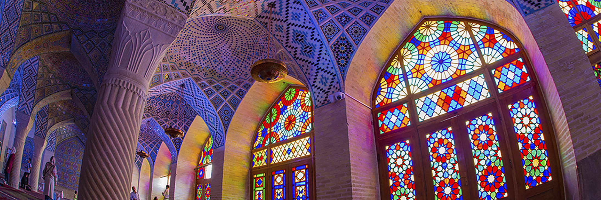
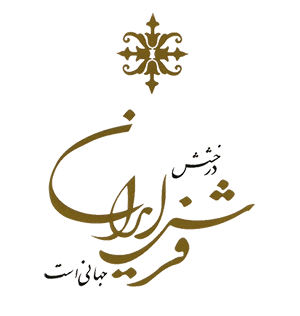
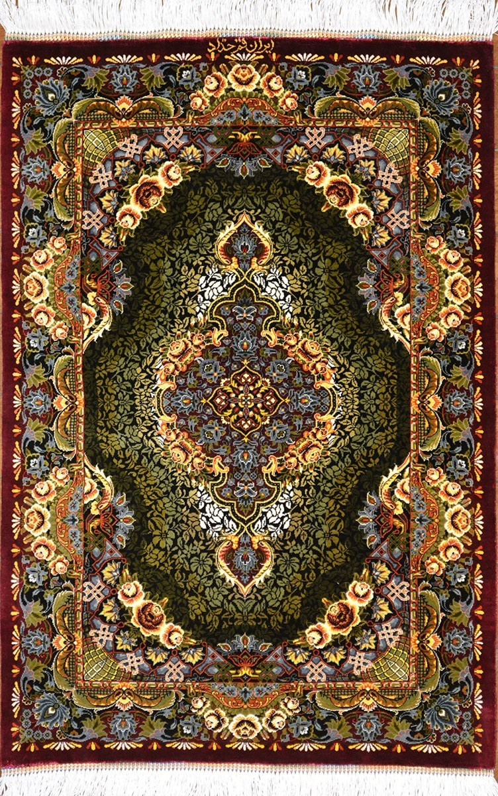
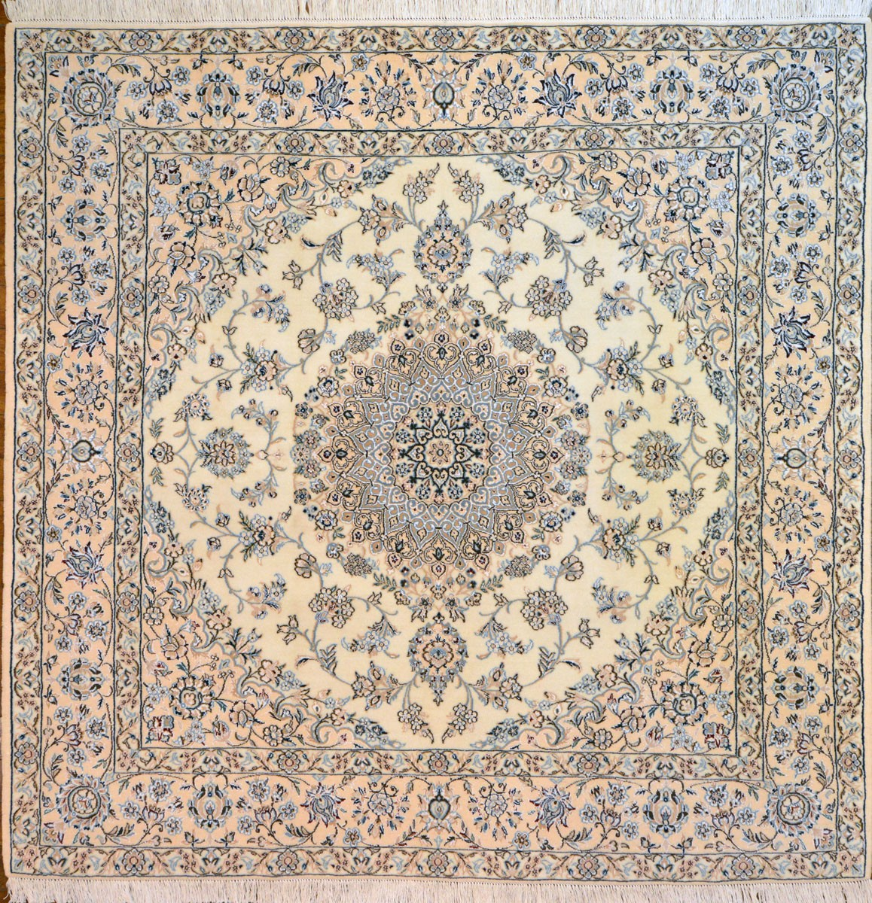
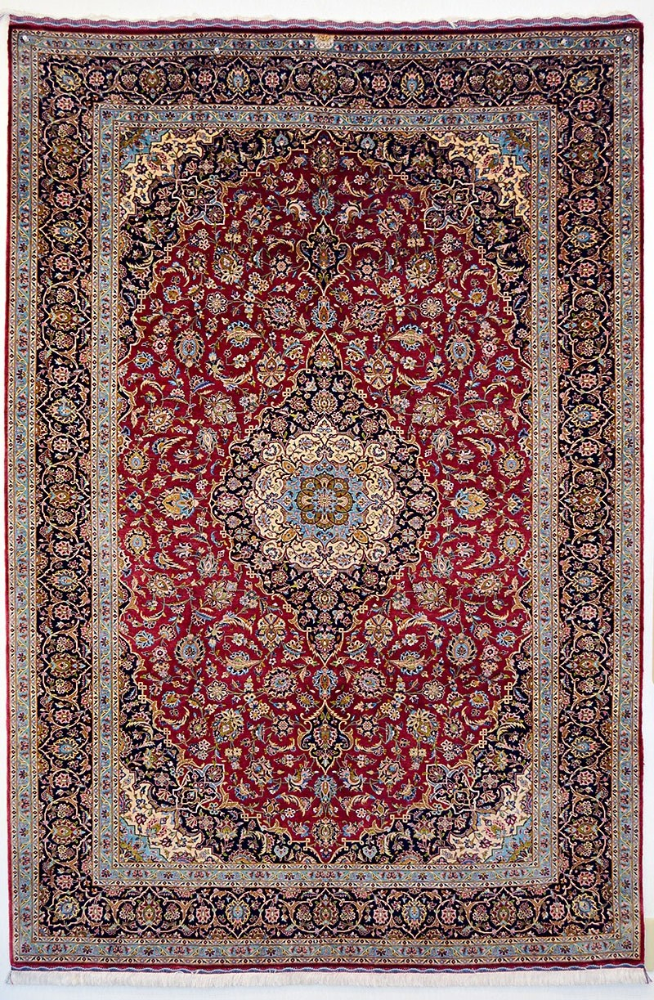

タブリーズはイランの北西部に位置し、首都テヘランに次ぐ国内第2の商業都市でマルコポーロの「東方見聞録」にもその賑わいが紹介されている歴史ある街です。冬場は雪が数メートルも積もるタブリーズでは、羊毛を用いた絨毯が織られ一枚の絨毯に使われる色数が他産地に比べ、際立って多いことで有名です。
多彩な色は作品の華やかさを演出するだけでなく、絵画絨毯とよばれる独自の作品世界を発展させました。
（額装品）


QUM Silk クムシルク

Tabriz Wool&Silk
タブリーズウール＆シルク
タブリーズはイランの北西部に位置し、首都テヘランに次ぐ国内第2の商業都市でマルコポーロの「東方見聞録」にもその賑わいが紹介されている歴史ある街です。冬場は雪が数メートルも積もるタブリーズでは、羊毛を用いた絨毯が織られ一枚の絨毯に使われる色数が他産地に比べ、際立って多いことで有名です。
多彩な色は作品の華やかさを演出するだけでなく、絵画絨毯とよばれる独自の作品世界を発展させました。
（額装品）
Naein Wool&Silk
ナイン ウール＆シルク

KASHAN Wool&Silk
カシャーン ウール＆シルク

カシャンは数ある絨毯産地の中でも、最も歴史が長いといわれる高級絨毯の産地です。農作物の育たぬ厳しい土地柄のため、古くから陶器やタイルなど工芸品の生産が発達しました。また交易の要衝としての絶好の地理的条件を生かし、絨毯とともにビロードや
ダマスク織の産地としても西洋に名を広めました。
１８世紀アフガン支配の下、衰退していた絨毯業が復興した１９世紀末以降、かねてより養蚕が盛んで絹織物の伝統が長いカシャンでは、精巧で高品質な絹の絨毯が数多く織られました。